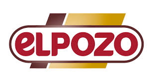
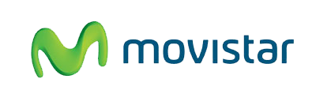
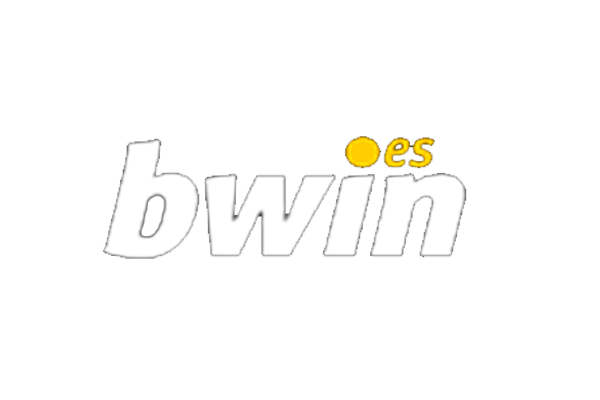
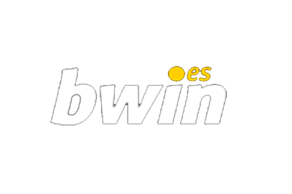

Nuestros Patrocinadores
En el Club de Balonmano Sergio, contamos con el apoyo de grandes marcas que comparten nuestra pasión por el deporte y los valores que promovemos. Gracias a su patrocinio, seguimos creciendo y alcanzando nuevas metas.
- Stake: Una de las principales plataformas de entretenimiento online, Stake apuesta por el deporte como una forma de unir a las personas a través de la emoción y la competición.
- El Pozo: Con más de 60 años de experiencia, El Pozo es sinónimo de calidad y confianza en el sector alimenticio. Su apoyo al deporte muestra su compromiso con la salud y el bienestar.
- Movistar: Un gigante en telecomunicaciones, Movistar respalda al deporte y la tecnología, acercando a los aficionados a los mejores eventos deportivos del mundo.
- UNICEF: Como organización mundial que lucha por los derechos de la infancia, UNICEF refleja los valores de igualdad y justicia que también promovemos en el deporte.
- Bwin: Un referente en apuestas deportivas, Bwin no solo apoya la competición sino también el entretenimiento responsable y la pasión por el juego limpio.


 
